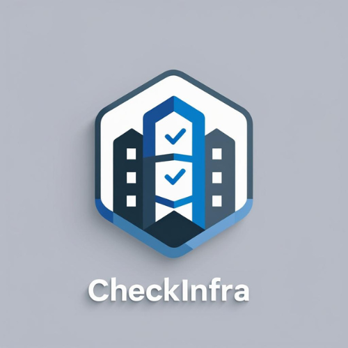

CheckInfra
Diagnóstico da Infraestrutura Sanitária de Banheiros Escolares
O CheckInfra é uma plataforma digital de diagnóstico da infraestrutura sanitária de escolas públicas e privadas, desenvolvida para apoiar gestores, secretarias municipais e equipes técnicas na identificação de riscos e priorização de intervenções.
A ferramenta utiliza checklists técnicos, registro fotográfico e leitura territorial dos dados para transformar avaliações de campo em informações estruturadas para apoio à gestão pública.